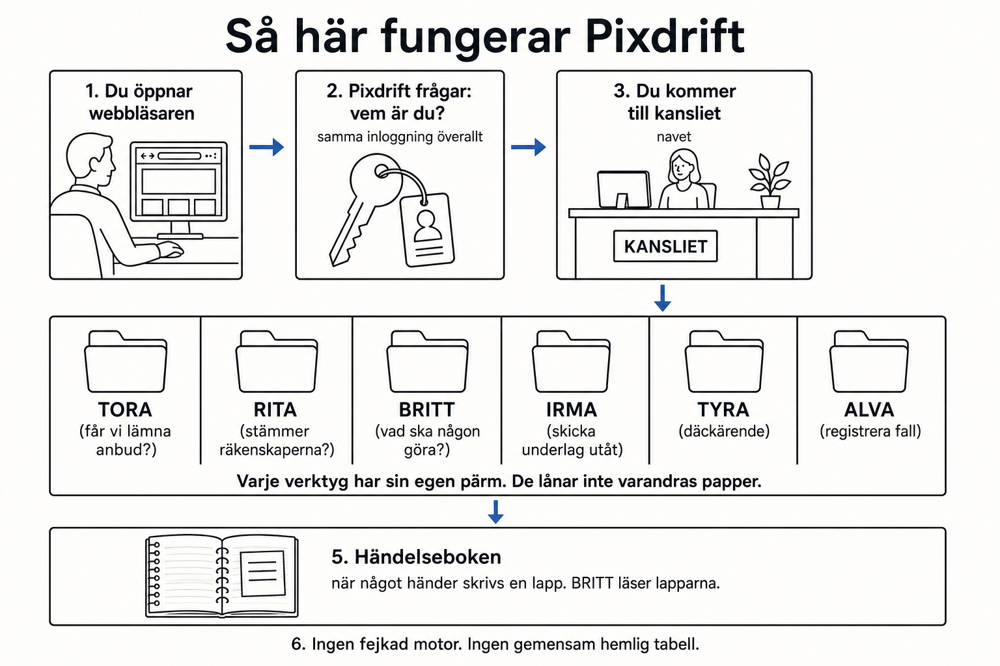

Så här fungerar Pixdrift
Tänk ett kontor. Ett väntrum. Sex pärmar. En händelsebok. Ingen pärm får skriva i en annan pärm.

1
Du öppnar webbläsaren och går till kansliet. Det är samma hus för alla verktyg.
2
Pixdrift frågar: vem är du, och vilket bolag tillhör du? Det kallas inloggning. Samma nyckel används överallt. Ingen egen lösenordslucka per verktyg.
3
Du kommer in i kansliet. Därifrån väljer du ett verktyg. Kansliet är receptionen, inte hela fabriken.
4
Varje verktyg har sin egen pärm:
TORA
Får vi lämna anbud?
RITA
Stämmer räkenskaperna?
BRITT
Vad ska någon följa upp?
IRMA
Skicka underlag till någon utanför.
TYRA
Däckärende och kundlänk.
ALVA
Registrera ett fall. Diagnosen saknas ännu.
5
När något händer skrivs en lapp i händelseboken. BRITT läser lapparna och säger vad någon bör göra. Verktygen pratar inte genom att rota i varandras pärmar.